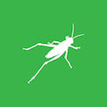

Critical Making 3: Parametric Product Design
Critical Making 3: Parametric Product Design explores algorithmic modeling strategies and digital fabrication for product development.
This studio-based course explores the product development process through algorithmic modeling strategies, computational design, and digital fabrication.
Students will develop basic skills with McNeel Rhinoceros and Grasshopper--a visual programming environment for algorithmic modeling, to design parametric systems and how to translate digital objects into physical form through digital manufacturing. Students will be introduced to the emerging field of parametric product design by developing projects that explore a multitude of form-finding strategies in surface patterning and complex geometric modeling of everyday objects spanning a variety of scales and applications. Familiar examples of product categories ripe for design experimentation include common objects such as pens and speakers, household items such as furniture and lighting, and personal items such as clothing, razors, and jewelry. In addition, students will develop an understanding of how to evaluate and optimize their designs based on product constraints, use cases, materiality, form, and function of physical objects produced through iterative cycles of production.
Day and Time:
Monday, 1:30 pm - 4:00 pm
CMCI Studio (1301 Walnut St)
Location:
We have adopted a hybrid (remote/in-person) class structure this semester due to COVID-19. This means anyone can participate in person or virtually over Zoom anytime. The class schedule will indicate when class is to be held in person at the Studio or virtually over Zoom. The following Zoom link is to be used for all class sessions. The required password is provided in Slack.
>> Zoom Meeting (Password Required) <<
Instructor:
RJ Duran
rj.duran@colorado.edu
Slack: @rjduran. #cmstudio on cmcistudio.slack.com
Office hours by appointment. Feel free to reach out to me via slack or email.
Syllabus:
This website is a real-time version of the course syllabus. It is updated weekly throughout the semester. A static version can be downloaded here.
Slack:
Channel #cmstudio and user group @ppd will be used for all course communication and notifications. Be sure to use the appropriate user group when necessary.
Course Themes
- Parametric Modeling Tools - ie. Rhino & Grasshopper
- Digital Fabrication - Laser Cutting, 3D Printing, CNC Milling
- Product Design
- Computational Design
- Mass Customization
- Mathematics & Geometry
- Scripting / Programming in C#, Python
Course Workload
- This is a 3 credit hour course. You should expect to dedicate at least 2-3 hours per credit hour. This translates into 6-9 hours per week outside of class. Consider 6 hours a minimum expectation for one studio course and plan accordingly with your other studio courses.
- Assignments for this course consist of weekly blog posts demonstrating project-based and process oriented research and explorations in making. Assignment parameters will be based on the topic of the week and in-class discussions. Refer to the Course Deliverables section for more information.
- The course is organized into weekly meetings consisting of instructor led project-driven topics organized as workshops and studio work sessions. It is expected that all students are active participants in each session.
Course Deliverables
This is a project based course and largely driven by student research and interests. As such, each deliverable is expected to vary based on the project parameters and requirements. The following outlines the general criteria for course deliverables throughout the semester.
Assignments
- Assignments are given weekly and need to be submitted as a blog post published to your Critical Making blog. A minimum of 1 blog post per week is the expectation.
- Medium is widely used in other studio classes but any blogging platform may be used.
- Posts are to be submitted via slack #cmstudio by the specified due date each week.
- It is recommended that a post includes a variety of media and content to support the subject matter. For example: text, images, video, graphics, photos, mockups, screen captures, tutorials, 3d model viewers (sketchfab), sketches, code, gifs, references, etc. Anything that is required to effectively communicate the details of a project, process, prototype, or idea.
- The subject matter is in response to the topics of the week. Ideally, it falls in line with your interests, research area, project, creative process, etc. For example, you might consider doing a series of tutorials on a topic that interests you or a process/workflow you are currently exploring through the course.
- Posts should be written to the best of your abilities and for a public audience. The post and any accompanying visual content (images, video) may be shared on social media.
Final Project
- Final Project Proposal (Submitted as a blog post)
- Final Project Presentation (Delivered live or as pre-recorded presentation)
- Final Project Documentation (Submitted as a blog post)
Technology
In this course you are free to use any kind of computer and operating system you wish as along as it can run the software listed. The course will primarily be taught using the macOS based version of each tool we encounter such as Rhino and Grasshopper, Blender, and Fusion 360.
Currently, most tools are cross-platform but may have exceptions or limitations per operating system. For instance, Rhino and Grasshopper for Windows is still an industry standard tool and many traditional plugins only work on Windows. McNeel introduced the Package Manager with Rhino 7 to begin resolving these differences. In general, I don't anticipate needing many specialized plugins that are not yet macOS compatible but there are always exceptions.
Hardware
- A recent Apple Macbook (2013 and newer) with macOS Catalina (10.15) or a Windows 10 based system.
- At least 30 - 50 GB extra hard drive space to install software and work.
- At least 1 TB external / portable hard drive or USB drives to move files around and between computers as needed.
- (Optional) I recommend a second monitor for Rhino and Grasshopper viewports. It will reduce the amount of switching you do between lessons and Rhino.
Software
In this class we will encounter a variety of tools used for 3d modeling, design file management, and creating toolpaths to drive CNC machines for digital fabrication. We will use Rhino & Grasshopper and Fusion 360 to explore parametric concepts but may end up using other types of design and engineering software as we progress. Some tools are essential and required to complete a task while other tools are based on personal preference and workflow. Access to the following software is recommended.
Required Software
- McNeel Rhino 7 - Educational licenses available at CU Bookstore for $95.
- Autodesk Fusion 360 - Useful for both CAD and CAM workflows.
- Ultimaker Cura - Ultimaker slicer
- Formlabs Preform - Formlabs slicer
- Bantam Tools - Controller for Bantam Tools Desktop CNC Machine
Additional Software
- Blender - An open-source 3d modeling tool that is widely used across many industries.
- Markforged - eiger.io is the cloud based slicer/controller for Markforged machines.
- Visual Studio Code
- Unity 2019.4 (Installed with Unity Hub)
- Adobe Dimension
- Substance Suite
- Meshlab
- Meshmixer
- Night Owl - Utility to manage light/dark mode on macOS.
Design Resources
Rhino
- McNeel Forums - The best place to get help with Rhino and Grasshopper.
- Rhino for Mac Wiki - A list of topics to understand differences between the Mac and Windows versions.
- Rhino 6 for Mac Users Guide
- Learning Rhino 6 for Mac (via LinkedIn Learning)
- Rhino 6 for Windows commands not in Rhino 6 for Mac
Grasshopper

- Grasshopper Components Reference
- The Grasshopper Primer - It's a little dated and doesn't cover Rhino / Grasshopper for Mac. The concepts all still apply though.
- AAD Algorithms-Aided Design: Parametric Strategies using Grasshopper by Arturo Tedeschi - A good book from 2014 that covers how to use algorithms for designing parametric systems.
- Visual Programming in Rhino3D with Grasshopper by Luis E. Fraguada - This is a great intro and overview of Grasshopper. About 1/2 of the content is similar to what you get from the Grasshopper Primer.
- Essential Algorithms and Data Structures - A brand new free book from McNeel that introduces Computational Design in Grasshopper.
- Parametric House - A website with many tutorials covering a variety of topics in parametric design. Most of these tutorials are technique or case study oriented and typically work with a set of built in or library based components.
- Nature of Code for Python in Grasshopper - A list of tutorials showing implementations of Nature of Code algorithms in Grasshopper with Python.
- Computational Design with Grasshopper for Rhino3D - Highly Recommended. Up to date with Rhino 6/7. Free with code EDUCATION_IS_PRICELESS_GH.
- Parametric Camp - An outstanding resource by Jose Luis García del Castillo (Harvard GSD). Similar to Dan Shiffman's Coding Train, but for Computational Design and Grasshopper.
- GSD-6338: Introduction to Computational Design (Fall 2019) - Lecture videos by Jose Luis García del Castillo y López (Harvard GSD).
- Explode Breps @ UVA - A collection of definitions spanning various techniques used in architectural design.
- TU Delft Grasshopper Resource - Tutorial based and easy to follow.
- Introduction to Grasshopper and History - Brief overview of the history of Grasshopper.
Additional References
These resources have to do with a range of topics -- parametric design, generative design, architecture, computation, programming, and fabrication.
- Elements of Parametric Design by Robert Woodbury - A foundational book covering the parametric design field and applications.
- Tessellations: Mathematics, Art, and Recreation by Robert Fathauer - An introductory book on Tesselations (tiling) for non-specalists.
- The Logic of Architecture: Design, Computation, and Cognition by William J. Mitchell
- Nature of Code by Dan Shiffman
- Generative Design by Hartmut Bohnacker, Benedikt Groß, Julia Laub, Claudius Lazzeroni
- Form+Code in Design, Art, and Architecture / Website - A compendium of computational concepts expressed through design and art. Highly recommend.
- Processing: A Programming Handbook for Visual Designers by Casey Reas and Ben Fry
- Advanced 3D Printing with Grasshopper: Clay and FDM by D. Diego Garcia Cuevas & D. Gianluca Pugliese
- Design for CNC: Furniture Projects and Fabrication Technique - A great introduction to design for CNC fabrication.
- Siteless: 1001 Building Forms by François Blanciak
Fabrication Resources
Our Studios
CMCI Studio facilities include the large main room (West Studio) and adjacent smaller room (North Studio). Both rooms contain different functionalities for developing projects at varying scales and for varying audiences. Read through the Studio Handbook for learning about each room and accessing the various tools and capabilities we have on site.
Idea Forge
The Idea Forge is an on-campus design and fabrication facility open to all students located in the Fleming Building (near the Wolf Law Building at Broadway & Baseline Rd). In this course we will be using Idea Forge to outsource fabrication via request system.
>> 3D Printing & Laser Cutting Fabrication Requests <<
Creative Labs Center
CMCI Students are welcome to utilize the ENVD CLC fabrication services.
- ENVD CLC
- There is a fee associated with non-ENVD student use of the labs (pdf provided in class).
- COVID-19 related protocols for the CLC this spring.
- It should be noted that ENVD student projects will take precedence over fabrication request from others however this should not entail significant delays most weeks.
- It is important that students review the YouTube videos for the lab they are requesting fabrication from.
- After that they should engage with CLC staff through the ENVD-CLC-DMC Team channels. Staff are happy to help students with the details of proper file submission and early engagement is key to a successful outcome.
- File templates and reference material can be found on the Files tab of the Team channel for each lab.
Week 1: Overview / Rhino
Jan 25 | Location: Zoom Meeting
- Week 1 Slides
- Make Break - Papercraft
Instagram Hashtags to Follow
Assignment 1: The Parametric Design Landscape / Rhino Basics
Part 1: Product Research
I would like you to spend some time this week exploring the field of parametric design. As a suggestion, think about how parametric design and computational design techniques can be applied across different scales and for different uses. Think about products that vary in scale, complexity, form, and function. Begin to identify products that already make use of or could make use of parametric design and write a brief summary of your findings. Include images and references.
- Identify 3 product categories ripe for parametric design experimentation.
- What kinds of products can you imagine benefiting from parametric design?
- Identify 3 creatives (designers, architects, etc) that are making interesting forms, objects, products, installations, or artifacts.
- What is being made?
- What is interesting to you about their work?
- What do you think their workflow is? What tools are they using?
Part 2: Rhino Basics
Before we meet next week, download and install Rhino and work through the following tutorials. The trial license is 90 days, after which you can purchase a license from the CU bookstore for $95.
Learning Rhino for Mac
Since most of you are a Mac, you will want to access the following lessons via LinkedIn Learning. Learn more at OIT.
- Look up the course Learning Rhino 6 for Mac on LinkedIn Learning.
- Work through the following chapters
- Getting Acquainted with Rhino for Mac
- Differences between Rhino 6 for Mac and Rhino for Windows
- Work through Chapter 3-6 to further your understanding. Chapter 3-5 are similar to the Rhino3D Introduction tutorial, but for Mac.
Rhino 3D Introduction
This will be most useful for those on Windows and when you encounter a Windows based tutorial. It's a good idea to be familiar with both interfaces - Mac and Windows.
- Create an account on rhino3d.education to access free course content.
- Enroll in Rhino 6 Introduction
- Proceed to work through Sections 1-4. These cover the Rhino interface and working with curves, surfaces, and solids.
Deliverable:
Only Part 1 is due as a blog post this week. Part 2 is for you to work through to get familiar with Rhino.
Share a link to your post with user group @ppd in Slack channel #cmstudio.
Due: Friday, Jan 29
Week 2: Rhino / Generators / Intro to Grasshopper
Feb 1 | Location: Zoom Meeting
Assignment 2: Build a Generator
Part 1: Readings
- Parameterize (pdf) chapter from Form+Code in Design, Art, and Architecture.
- On Generative Algorithms by Anders Hoff (inconvergent.net) - A great introduction to how generative algorithms can be used to create visual works of art.
- So you want to build a generator... by Kate Compton
- AI, Architecture, and Generative Design: Algorithmic Brainstorming for Creative Work by Jonathan Follett
Part 2: Build a Generator
Based on your understanding of "generators", build one using Rhino, Grasshopper, Fusion 360, Processing, p5.js, or any other tool of choice that enables you to work parametrically. I suggest Rhino and Grasshopper since that's what we are mostly talking about in class.
Start by mapping out what your generator will do and what the expected results might look like. You can start from a reference image or sketch too. Identify the constraints (parameters that are fixed) and your inputs (parameters that can change) and proceed to design a system that can produce variation by changing the inputs.
Deliverable:
Document your process for Part 2 in a blog post.
Produce a matrix (or set) of outputs and document the results. Write a blog post that includes visuals and details about your generator and how it works.
- What's the purpose of your generator?
- What's your criteria or constraints?
- What kinds of inputs does your generator have?
- What kind of output do you get?
Share a link to your post with user group @ppd in Slack channel #cmstudio.
Due: Friday, Feb 5
Week 3: Grasshopper
Feb 8 | Location: Zoom Meeting
Assignment 3: Parametric Vessel
Part 1: Readings / Tutorials
- Read Chapter 1: Foundations from The Grasshopper Primer. This is a great reference while going through the next learning resource.
- Work through Chapters 1-5 from Computational Design with Grasshopper for Rhino3D. Ch 1-2 are about setting up the tools and will be review but the learning system requires that you watch through them to unlock later chapters.
- Ch 3 - The Gh Interface
- Ch 4 - Intro to Params
- Ch 5 - Lists
Part 2: Vessel
Create a parametric vessel generator in Grasshopper based on the concepts demonstrated in class and in recorded lesson - Grasshopper Tutorial: Vase Builder.
Deliverable:
Document your process for Part 2 in a blog post.
Produce 3 variations of your vessel design using your definition. Write a blog post that includes visuals and details about your different vessels, why you chose to make what you did, and how your system works.
I suggest exploring some of the rendering modes built into Rhino such as "Shaded" or "Rendered" to produce better looking screenshots. You can make use of the ScreenCaptureToFile Rhino command to save images directly out of the active Rhino viewport. Alternatively, you can go outside of Rhino to render with tools such as Keyshot or Adobe Dimension to place your models into a scene for scale and give them some materials and lighting for realism.
Share a link to your post with user group @ppd in Slack channel #cmstudio.
Due: Friday, Feb 12
Week 4: Pattern Algorithms
Feb 15 | Location: Zoom Meeting
Assignment 4: 2D Patterns
Build a 2D pattern generator.
Here are a few great tutorials to choose from if you like. While working through one or more of them, look for opportunities to deviate from the example as it. Remix it in your own way.
Grasshopper
- Cairo Tesselation
- Parametric Patterns
- Parametric Stars
- Voronoi Curve Attractor
- Truchet Tiles
- Geometric Pattern 2
Blender
Deliverable:
Document your process and results with video and/or screenshots in a blog post. Try out ScreenCaptureToFile and adusting the Rhino grid settings or background colors to get different visual results. You can also save out an Illustrator file and make a document showing different variations of your pattern generator. Start to think about uses for the patterns you create.
Share a link to your post with user group @ppd in Slack channel #cmstudio.
Due: Sunday, Feb 21
Week 5: DigiFab Studio: Laser Cutting
Feb 22 | Location: Zoom Meeting + In Person
Digital Fabrication Methods
Examples and tutorials covering digital fabrication methods that enable the production of 3D objects from 2D sheet material using a laser cutter.
- Unrolling
- Contouring
- Triangulation (Faceted)
- Waffle
- Youtube: grasshopper tutorial # waffle structure ribs part 1
- Youtube: grasshopper tutorial # waffle structure (ribs) laser cut file part 2
- Sectioning design systems by HASSAN RAGAB
- Youtube: Waffle structure - Grasshopper Tutorial
- Youtube: Grasshopper 006 waffle structure beams concept & fabrication - Put this on MUTE!
Assignment 5: Laser Cut Pattern
Design a 2d pattern to be laser cut and produce a physical prototype using it. Outsource your job to the Idea Forge Rapid Prototyping Lab through their request system.
What might this look like?
- You could produce a 3D model from sheet material using one of the 2D to 3D methods discussed in class. ie. Contours, waffle, unrolling
- You could produce a template to use in a workflow. ie. Make a stencil to transfer a pattern to an object. For example, Turn Studio.
- You could produce an object using a 2D pattern. ie. Laser cut sheet of paper folded into cylinder as light shade or a light screen cut out of wood or cardboard.
- Your own idea!
Materials
- Acrylic: Plasticare (Denver), CO Plastics (Louisville), Home Depot
- Cardboard: Home Depot, Office Max, Denver Boxes, Recycle Bin / Dumpster
- Paper: HR Meininger Art Supply (Denver), Art Supply Stores, Hobby Lobby
- Plywood: Austin Hardwoods, Home Depot
Deliverable:
Document your process with images showing the design and physical objects produced in a blog post. If you have a physical model done, please bring to class.
Share a link to your post with user group @ppd in Slack channel #cmstudio.
Due: Sunday, Feb 28
Week 6: DigiFab Studio: CNC Milling 1
Mar 1 | Location: Zoom Meeting + In Person
Assignment 6: PCB Pattern
Design a 2D Pattern for CNC Milling and Mill it on the Bantam PCB Milling machine.
Required Readings:
Tutorials:
Deliverable:
Document your process with images and video showing the design and physical objects produced in a blog post. If you have a physical model done, please bring to class.
Share a link to your post with user group @ppd in Slack channel #cmstudio.
Due: Sunday, Mar 14
Week 7: DigiFab Studio: CNC Milling 2
Mar 8 | Location: Zoom Meeting + In Person
- Fusion 360 Workflow
- Fusion 360 Tool Library
- Machining Wax - Bantam Tools Datasheet
- machinablewax.net
Week 8: No Class
Mar 15 | Location: Zoom Meeting + In Person
Class canceled due to weather.
Week 9: DigiFab Studio: TBD
Mar 22 | Location: Zoom Meeting + In Person
- Week 9 Slides
- Final Project Proposal Due by Friday, March 26
Outsourcing to CLC
Process
File Preparation
Week 10: Final Projects
Mar 29 | Location: Zoom Meeting + In Person
Week 11: Final Projects
Apr 5 | Location: Zoom Meeting + In Person
Week 12: Final Projects
Apr 12 | Location: Zoom Meeting + In Person
Week 13: Final Projects
Apr 19 | Location: Zoom Meeting + In Person
Week 14: Final Project Presentations
Apr 26 | Location: Zoom Meeting + In Person
- Last Day of Class
- Final Project Presentations
- Apr 28 - Final Project Documentation Due